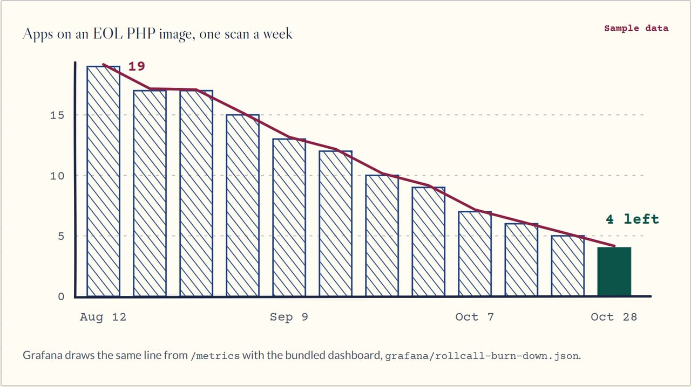

Metrics#
This page turns on and protects the Prometheus endpoint. Next: Laravel for the dashboard.
Metrics are off by default (the stack's metrics rule). With ROLLCALL_METRICS_ENABLED=true, /metrics serves
Prometheus text built from the latest snapshot (a request never triggers a scan). It needs ROLLCALL_METRICS_TOKEN as a bearer token or an address in
ROLLCALL_METRICS_ALLOW; with neither set, nobody gets in. Labels are version numbers, state names, drift kinds and
public package names: no app names or personal data. The dashboard JSON is in grafana/rollcall-burn-down.json; import
it into Grafana once a Prometheus server scrapes the endpoint. Run rollcall scan
on a schedule so the series moves.
Watch the back row empty (the burn-down, sample data)

The same line Grafana draws from /metrics. Made-up apps, real arithmetic.